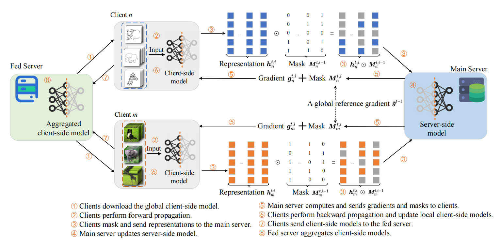

Author / Co-Author
-
ZeroLock: Concurrent Memory-Efficient LLM Training via Modular Update DecouplingINFOCOM 2027, under review
Peer-Reviewed
-
SFL-DiMask: Split Federated Learning with Gradient-Saliency Masking for Domain GeneralizationINFOCOM 2027, under review
